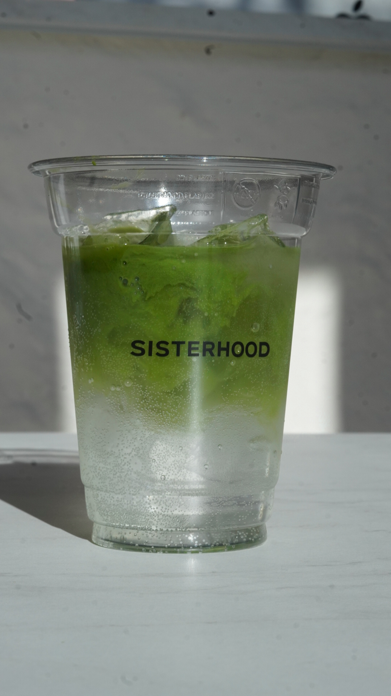

Matcha Tonic

Matcha Tonic – to orzeźwiający napój, w którym zielona herbata
matcha spotyka się z subtelnymi nutami cytryny i mięty. Delikatna
goryczka matcha równoważona jest świeżością cytrusowej nuty i
odświeżającym akcentem mięty. To idealny wybór dla tych, którzy
cenią sobie zdrowy i energetyzujący napój o wyjątkowym smaku i
aromacie.